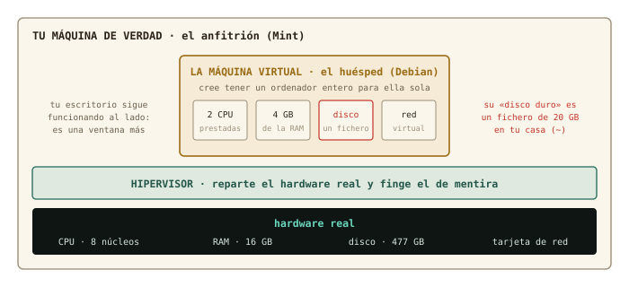
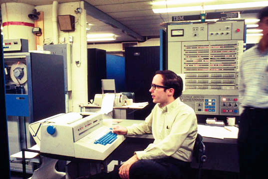
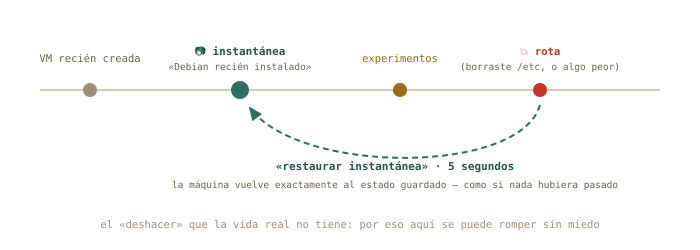
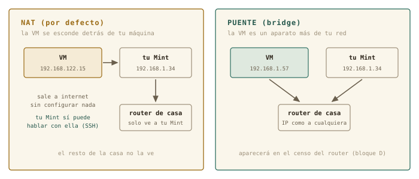

7 Tu primera máquina virtual
Empieza el bloque C, y con él la parte del curso en la que por fin está permitido romper cosas. Hoy construyes un ordenador de mentira dentro de tu ordenador de verdad — con su procesador, su memoria, su disco y su cable de red, todos fingidos — y conoces el superpoder que la vida real no tiene: guardar el estado de una máquina y volver a él cuando algo salga mal. Es el laboratorio de riesgo cero donde harás la instalación del capítulo 8 y los experimentos de red de los bloques D y E.
Al terminar esta sesión sabrás
- Qué es una máquina virtual, qué es un hipervisor, y qué se virtualiza exactamente: CPU, memoria, disco y red.
- Instalar el taller de virtualización de Linux — KVM, QEMU, libvirt y
virt-manager— desde el Gestor de software o con un soloapt. - Descargar la imagen de instalación de Debian y comprobar que no viene corrupta.
- Crear una máquina virtual desde cero, arrancarla y apagarla sin miedo.
- Usar instantáneas: guardar el estado de la máquina y restaurarlo en segundos.
- Distinguir las dos formas de conectar la VM a la red — NAT y puente — y por qué importarán en los bloques D y E.
- Entender qué te están dando cuando te asignen «una máquina virtual» en la universidad o en una nube.
7.1 Un ordenador dentro del ordenador
Una máquina virtual (VM) es un ordenador completo que existe solo como software: arranca, instala un sistema operativo, se conecta a la red, se cuelga y se reinicia — todo dentro de una ventana de tu escritorio. El programa que hace el truco es el hipervisor: toma el hardware real de tu máquina — el anfitrión (host) — y le presenta al sistema invitado — el huésped (guest) — un hardware de mentira que este cree suyo.

Cuatro cosas se fingen. CPU: la VM recibe un par de núcleos prestados — no simulados: el procesador real ejecuta sus instrucciones directamente, por eso va rápido. Memoria: un trozo de tu RAM reservado para ella. Disco: un fichero en tu casa que la VM cree que es un disco físico — con sus particiones, su sistema de ficheros, su GRUB, todo lo del capítulo 6 dentro. Red: una tarjeta de red virtual, conectada a un cable virtual que llega hasta tu conexión real. Mientras tanto tu escritorio sigue funcionando al lado: la VM es una ventana más.
En Linux, el taller de virtualización viene de serie y se llama por sus piezas:
| Pieza | Qué hace | Analogía |
|---|---|---|
| KVM | el hipervisor, dentro del propio kernel: presta la CPU real | el motor |
| QEMU | finge los dispositivos: disco, red, pantalla | la carrocería |
| libvirt | el gestor: define, arranca, guarda y vigila las máquinas | el cuadro de mandos |
| virt-manager | la ventana gráfica sobre libvirt (y virsh, su CLI) |
el volante |
Nada que descargar de una web ajena, nada que se rompa con la próxima actualización del kernel: KVM es parte de Linux. Y es exactamente lo que hay debajo de la mayoría de las nubes del mundo — dato que cobrará sentido al final del capítulo.
◷ Historia · Ordenadores de mentira desde 1967
La virtualización es más vieja que Unix. En 1967, en el centro de investigación de IBM en Cambridge, un equipo escribió CP-67 para el mainframe System/360-67: un sistema que en vez de repartir tiempo de un ordenador entre muchos usuarios — el tiempo compartido del capítulo 4 — le daba a cada uno un ordenador entero de mentira, con su propio sistema operativo dentro. La idea funcionó tan bien que IBM la vendió durante décadas como VM/370. Luego el PC la olvidó casi treinta años: resucitó en 1999 con VMware y en 2007 entró en el kernel de Linux con el nombre de KVM. Hoy, cuando alquilas «un servidor en la nube», estás alquilando una máquina de mentira exactamente en el sentido de 1967.

7.2 Montar el taller
Primero, comprueba que tu procesador sabe virtualizar — casi todos los de la última década saben, pero preguntar cuesta un segundo, y lo haces con las herramientas de los capítulos 3 y 4:
marcos@portatil:~$ grep -c -E 'vmx|svm' /proc/cpuinfo
8
marcos@portatil:~$ lscpu | grep -i virtualiz
Virtualización: VT-xUn número mayor que cero (vmx es Intel, svm es AMD) significa que sí. Si saliera 0, la virtualización suele estar apagada en el UEFI del capítulo 6: se activa allí, en la opción llamada VT-x, AMD-V o SVM Mode.
El taller entero se instala como cualquier programa: abre el Gestor de software de Mint, busca «Gestor de máquinas virtuales» (o virt-manager) e Instalar. Fíjate en la lista que te enseña antes de aceptar: además de la ventana, trae qemu, libvirt y compañía — son las dependencias del capítulo 5, y el gestor las resuelve solo. La misma operación, en una línea de terminal, es el gesto de siempre:
marcos@portatil:~$ sudo apt install virt-manager
[sudo] contraseña de marcos:
Se instalarán los siguientes paquetes NUEVOS:
libvirt-daemon-system qemu-system-x86 virt-manager virt-viewer ...Al abrir por primera vez el Gestor de máquinas virtuales (menú → Administración) te pedirá tu contraseña: es el sistema comprobando que eres administrador antes de dejarte tocar el hipervisor. Funciona tal cual — pero hay un paso que la instalación gráfica no hace por ti y que conviene dar: añadirte al grupo libvirt.
marcos@portatil:~$ sudo usermod -aG libvirt marcosCapítulo 4: los grupos son bolsas de permisos, y este es el que autoriza a manejar máquinas virtuales sin sudo — virt-manager deja de pedirte la contraseña, y virsh, su cara de terminal, funciona directamente. Como con todo cambio de grupos, hace efecto al cerrar sesión y volver a entrar. Después, la comprobación de que todo respira:
marcos@portatil:~$ groups
marcos adm cdrom sudo dip plugdev libvirt
marcos@portatil:~$ virsh list --all
Id Nombre Estado
------------------------
marcos@portatil:~$ virsh net-list --all
Nombre Estado Inicio automático Persistente
----------------------------------------------------
default activo sí sívirsh es la cara CLI de libvirt — el mismo cuadro de mandos que virt-manager enseña con ventanas. Una lista vacía de máquinas y una red default activa: el taller está montado.
✚ Truco · Si tu anfitrión es Windows o macOS
KVM vive en el kernel de Linux, así que en otros sistemas no existe. Su equivalente allí es VirtualBox, gratuito y muy parecido en la práctica: las mismas ideas de este capítulo — hipervisor, disco como fichero, instantáneas, NAT frente a puente — con otros nombres en los menús. Si sigues el curso desde el anexo «Vengo de Windows», lee este capítulo con VirtualBox abierto al lado: te reconocerás en cada paso.
7.3 La imagen de instalación
Para instalar un sistema en una máquina — real o virtual — hace falta el medio de instalación. Antes era un CD; hoy es un fichero ISO: la imagen exacta, byte a byte, de aquel disco. En un PC real se graba en un pendrive (capítulo 8); en una VM, el fichero es el disco, y se «inserta» sin más.
Descarga la imagen netinst de Debian desde debian.org — unos 700 MB: lo mínimo para arrancar el instalador, que después descargará el resto de la red — y guárdala en ~/Descargas. Y antes de usarla, un hábito de físico: comprueba que llegó intacta. Junto a la ISO, Debian publica un fichero SHA256SUMS con la huella digital de cada imagen — un número que cambia si cambia un solo bit del fichero:
marcos@portatil:~/Descargas$ sha256sum debian-13.1.0-amd64-netinst.iso
9b6f1e0c… debian-13.1.0-amd64-netinst.iso
marcos@portatil:~/Descargas$ grep netinst SHA256SUMS
9b6f1e0c… debian-13.1.0-amd64-netinst.isoSi las dos huellas coinciden, el fichero es exactamente el que Debian publicó (el número de versión será el que toque cuando lo descargues). Si no, se descarga de nuevo — nunca se instala desde una imagen sospechosa. Es la misma lógica que verificar la calibración antes de medir.
7.4 Crear la máquina
Abre virt-manager (menú → Administración → Gestor de máquinas virtuales, o tecléalo en la terminal). La ventana muestra la conexión QEMU/KVM con la lista vacía. Pulsa Archivo → Nueva máquina virtual y sigue el asistente — es un formulario de cinco pasos, y cada uno es una decisión que ya entiendes:
- Medio de instalación local (imagen ISO) → Explorar → Buscar local → tu
debian-13.x-amd64-netinst.iso. Comprobará solo que es Debian. - Memoria y CPU: 4096 MB y 2 CPU es un buen taller. Regla: nunca más de la mitad de tu RAM real — la otra mitad la necesita tu Mint para seguir vivo al lado.
- Disco: 20 GB. Es el fichero de la figura. Y un detalle elegante: el fichero crece según se usa — hoy ocupará unos cientos de MB aunque diga 20 GB.
- Nombre:
debian-lab. Sin espacios (capítulo 1: los espacios importan). Selección de red: Red virtual ‘default’: NAT — la opción por defecto, y la correcta hoy. - Finalizar. La máquina arranca sola: verás en su ventana una pantalla azul con el menú del instalador de Debian.
Y aquí paras. La instalación es la sesión del capítulo 8 entera; hoy solo querías ver la máquina nacer. Apágala desde el menú de su ventana: Máquina virtual → Apagar → Forzar apagado. En un PC real, cortar la corriente a un instalador a medias sería una barbaridad; aquí no hay nada instalado que perder — primer aviso de que las reglas dentro de la VM son otras.
marcos@portatil:~$ virsh list --all
Id Nombre Estado
----------------------------
- debian-lab apagado
marcos@portatil:~$ sudo ls -lh /var/lib/libvirt/images/
-rw------- 1 root root 20G ago 25 12:40 debian-lab.qcow2
marcos@portatil:~$ sudo du -h /var/lib/libvirt/images/debian-lab.qcow2
197M /var/lib/libvirt/images/debian-lab.qcow2Ahí está el ordenador entero, en un fichero de /var — el directorio de «lo que varía», capítulo 4 — que dice 20 GB pero ocupa 197 MB de verdad. Ese du frente a ls -l es el capítulo 6 enseñándote tamaño nominal frente a espacio real: el fichero es disperso (sparse), y solo consume disco a medida que la VM escribe en él.
△ Cuidado · Lo que vale y lo que no vale en la máquina de mentira
Dentro de la VM, todo vale: particionar, formatear, borrar /etc, reinstalar — para eso está. Pero dos cosas siguen siendo reales. Su consumo: mientras corre, se lleva la RAM y los núcleos que le diste (por eso se apaga cuando no se usa). Y su fichero: borrarlo es borrar la máquina; si un día quieres deshacerte de ella, se hace desde virt-manager (Eliminar, marcando borrar el disco) — no con un rm a ciegas en /var/lib/libvirt/images. Y la ISO no es la máquina: es el CD de instalación; puede borrarse cuando ya no la necesites.
7.5 El superpoder: instantáneas
Una instantánea (snapshot) guarda el estado completo de la máquina virtual — su disco, y si está encendida, también su memoria — con un nombre. Después puedes hacer lo que quieras y volver a ese estado exacto en segundos. Es el «deshacer» que un ordenador real no tiene, y cambia por completo cómo se aprende: el miedo a romper desaparece, porque romper cuesta cinco segundos de arreglar.

En virt-manager: abre la ventana de la máquina, Ver → Instantáneas, y el botón + crea una nueva con el nombre que le pongas. Para volver: selecciónala y pulsa Ejecutar instantánea seleccionada. En la CLI es igual de sencillo:
marcos@portatil:~$ virsh snapshot-create-as debian-lab vm-recien-creada
Instantánea de dominio vm-recien-creada creada
marcos@portatil:~$ virsh snapshot-list debian-lab
Nombre Hora de creación Estado
--------------------------------------------------------
vm-recien-creada 2026-08-25 12:52:10 +0200 shutoffEl protocolo del curso, a partir del capítulo 8: en cuanto Debian esté instalado y funcionando, instantánea «recién instalado». Cada experimento arriesgado, instantánea antes. Todo lo que se rompa, se restaura. Nunca más reinstalar por un error — salvo cuando reinstalar sea el ejercicio.
7.6 Dos formas de conectarla: NAT y puente
Al crear la máquina elegiste Red virtual ‘default’: NAT. Conviene entender qué elegiste, porque los bloques D y E se apoyan en ello.

Con NAT, libvirt monta una red privada minúscula dentro de tu máquina — la default, con direcciones 192.168.122.x — y hace de router entre ella y el mundo: la VM sale a internet sin configurar nada, tu Mint puede hablar con ella (lo harás por SSH en el capítulo 11), y el resto de la casa ni sabe que existe. Con un puente (bridge), la VM se conecta directamente a tu red doméstica y el router de casa le da una dirección como a cualquier portátil o móvil: aparecería en el censo de dispositivos del bloque D. Es más «real» y también más delicado — en portátiles con Wi-Fi da guerra —, así que el curso trabaja en NAT y deja el puente como experimento opcional. Puedes ver la red default desde el anfitrión, con un comando que será el protagonista del capítulo 9:
marcos@portatil:~$ ip a | grep virbr0
3: virbr0: <NO-CARRIER,BROADCAST,MULTICAST,UP> mtu 1500 ...
inet 192.168.122.1/24 brd 192.168.122.255 scope global virbr0Tu Mint tiene ahora una segunda tarjeta de red — virtual — con la dirección 192.168.122.1: es el router de la red de mentira. Guarda este dato; cuando en el capítulo 9 hablemos de direcciones y máscaras, ya tendrás una red propia sobre la que experimentar.
7.7 Qué te dan cuando te dan «una VM»
La escena que el diseño de este curso tenía en mente: el grupo de investigación o el servicio de informática te dice «te hemos creado una máquina virtual». Ahora sabes exactamente qué es: lo mismo que acabas de hacer, sobre un anfitrión grande de la universidad o de una nube, con KVM o un primo suyo debajo. Te darán una dirección, un usuario y probablemente una clave SSH (capítulo 12), y no verás ninguna ventana con su pantalla: la máquina existe, pero solo hablarás con ella por la red. Los núcleos y la memoria que tiene son «prestados» como los de tu debian-lab, y compartes el anfitrión con otros — el tiempo compartido de 1967, otra vez. Y si te hablan de contenedores (Docker y compañía): son el primo ligero — no fingen un ordenador entero, comparten el kernel del anfitrión y aíslan solo un programa. Más rápidos, menos independientes. Vocabulario para reconocerlos; el curso se queda con las máquinas virtuales.
✚ Truco · Ventanas o comandos, la misma máquina
virt-manager y virsh son dos caras de libvirt: todo lo que haces con clics tiene su orden. Para crear y explorar, la ventana es más amable; para el servidor sin escritorio del bloque E — donde gestionarás máquinas solo por SSH — virsh es la única cara que hay. El principio de siempre: aprende el concepto una vez, y elige la puerta según el momento.
7.8 Práctica: el taller en marcha
Cuaderno en marcha (script sesion07.log). Hoy instalas software y creas tu laboratorio — nada de lo que hagas toca tu sistema más allá de instalar paquetes y crear un fichero grande en /var.
Nivel 1 · Lo esencial
Ejercicio 7.1 · ¿Sabe virtualizar tu procesador?
Comprueba de dos formas que tu CPU tiene soporte de virtualización, y anota en el cuaderno cuál de las dos tecnologías tiene (Intel o AMD). Pista: /proc/cpuinfo con grep -c, y lscpu con grep -i.
grep -c -E 'vmx|svm' /proc/cpuinfo (un número > 0) y lscpu | grep -i virtualiz (VT-x para Intel, AMD-V para AMD). Si sale 0 o vacío, la opción está apagada en el UEFI: reinicia, entra en la configuración (capítulo 6) y actívala.
Por qué así — Dos instrumentos distintos para la misma medida, como siempre. Y fíjate en /proc: el capítulo 4 te enseñó que ahí el kernel te cuenta lo que sabe del hardware — hoy le preguntas por una capacidad concreta de la CPU.
Ejercicio 7.2 · Montar el taller
Instala el Gestor de máquinas virtuales por la vía que prefieras — Gestor de software o apt —, ábrelo una vez (te pedirá la contraseña), añádete al grupo libvirt, cierra y vuelve a abrir sesión, y comprueba con groups y virsh list --all que estás dentro y que el taller responde. Pista: las dos vías instalan exactamente los mismos paquetes; usermod -aG añade sin quitar los grupos que ya tienes; los grupos nuevos no aparecen hasta reiniciar la sesión.
Gestor de software → «Gestor de máquinas virtuales» → Instalar (o sudo apt install virt-manager), sudo usermod -aG libvirt $USER, cerrar sesión y entrar. groups debe listar libvirt; virsh list --all devuelve una tabla vacía sin quejarse. Si protesta con «permiso denegado» hablando de un socket, es que no reiniciaste la sesión.
Por qué así — Un paquete, un grupo, una comprobación: el capítulo 5 y el 4 trabajando juntos. $USER es la variable de entorno del capítulo 5 con tu nombre — escribirlo así vale para cualquier usuario.
Ejercicio 7.3 · La imagen, verificada
Descarga la ISO netinst de Debian para amd64 y su fichero SHA256SUMS, y comprueba que la huella coincide. Pista: sha256sum fichero.iso calcula; grep netinst SHA256SUMS te aísla la línea correcta para compararla a ojo — o deja que sha256sum -c SHA256SUMS 2> /dev/null | grep netinst lo compare por ti.
Las dos huellas deben ser idénticas carácter a carácter. Con sha256sum -c, la línea buena dice debian-13.x-amd64-netinst.iso: La suma coincide; el 2> /dev/null silencia las quejas por las otras imágenes del fichero que no descargaste.
Por qué así — Nunca se instala desde una imagen sin verificar: una descarga cortada o manipulada produce instalaciones que fallan de formas misteriosas. El 2> del capítulo 3 y el grep de siempre te dan la comprobación en una línea.
Ejercicio 7.4 · Nace debian-lab
Crea la máquina con el asistente (4 GB, 2 CPU, 20 GB, red NAT), deja que arranque hasta el menú del instalador, mírala un minuto — y apágala con Forzar apagado. Comprueba con virsh que existe y está apagada. Pista: el asistente son cinco pantallas; si algo no encaja con el capítulo, avanza igual — cualquier decisión se cambia después en la configuración de la máquina.
virsh list --all → debian-lab apagado. Si la máquina no arranca con un error sobre KVM, vuelve al 7.1: la virtualización está apagada en el UEFI. Si el asistente no encuentra la ISO, pulsa Buscar local y navega hasta ~/Descargas.
Por qué así — Acabas de hacer, con clics, exactamente lo que el servicio de informática hace cuando te «da una VM». La única diferencia es la escala del anfitrión.
Ejercicio 7.5 · Un disco de 20 GB que pesa 200 MB
Localiza el fichero de disco de tu máquina y mide su tamaño de las dos maneras del capítulo 6: el nominal (ls -lh) y el real (du -h). Explica en tu cuaderno la diferencia. Pista: los discos de libvirt viven en /var/lib/libvirt/images/, y ese directorio es de root.
sudo ls -lh /var/lib/libvirt/images/ dice 20G; sudo du -h /var/lib/libvirt/images/debian-lab.qcow2 dice unos cientos de MB. El fichero es disperso: reserva 20 GB de tamaño lógico pero solo ocupa lo que la VM ha escrito de verdad. Crecerá durante la instalación del capítulo 8.
Por qué así — Tamaño nominal frente a ocupación real: un físico distingue una capacidad de una medida sin pestañear. Y sudo porque el directorio es del sistema (/var, capítulo 4): las máquinas de todos los usuarios viven ahí.
Ejercicio 7.6 · La primera instantánea
Con la máquina apagada, crea una instantánea llamada vm-recien-creada desde virt-manager, y compruébala desde la terminal. Después, borra esa instantánea (será inútil en cuanto instales Debian) y verifica que desapareció. Pista: virsh snapshot-list debian-lab lista; virsh snapshot-delete debian-lab NOMBRE borra.
En virt-manager: ventana de la máquina → Ver → Instantáneas → +. En terminal: virsh snapshot-list debian-lab la muestra; virsh snapshot-delete debian-lab vm-recien-creada la elimina, y la lista vuelve a estar vacía.
Por qué así — Has recorrido el ciclo completo — crear, comprobar, borrar — con las dos caras de libvirt. El que importa, «recién instalado», lo harás al final del capítulo 8, y será el punto de retorno de todo el resto del curso.
Nivel 2 · Para curiosos (opcional)
Ejercicio 7.7 · La máquina, por dentro de libvirt
libvirt guarda la definición de cada máquina como texto. Con virsh dumpxml debian-lab y las tuberías esenciales del capítulo 3, averigua cuánta memoria tiene asignada, cuántas CPU, y dónde está su disco. Pista: | grep -i memory, | grep vcpu, | grep -i qcow2.
virsh dumpxml debian-lab | grep -i memory → <memory unit='KiB'>4194304</memory> (4 GB en KiB); | grep vcpu → 2; | grep qcow2 → la ruta en /var/lib/libvirt/images/.
Por qué así — «Todo es un fichero de texto» llega hasta aquí: tu ordenador de mentira es, en última instancia, un documento XML que describe su hardware. Cambiar la RAM de la máquina es editar un número — y grep es tu lupa para encontrarlo. Cierra el cuaderno: exit, sesion07.log a la colección.
7.9 Autocomprobación
Marca una respuesta por pregunta; la corrección es inmediata.
El hipervisor es…
El disco duro de tu máquina virtual es…
/var. Ni particiones nuevas ni RAM — por eso crear y borrar máquinas es tan barato.Una instantánea sirve para…
Con la red NAT por defecto de libvirt…
192.168.122.x dentro de tu máquina, con tu Mint como router. Lo de recibir IP del router de casa es el modo puente.Te añaden al grupo libvirt y virsh sigue dando «permiso denegado». Lo más probable:
groups te lo confirmará.sudo permanente — reinicia la sesión.Un contenedor (Docker) se diferencia de una VM en que…
Autocomprobación (test de la sección 7.9) — Respuestas: 1 b · 2 b · 3 a · 4 b · 5 b · 6 b.
La próxima sesión
Tienes una máquina vacía con el instalador de Debian esperando en su bandeja. En el capítulo 8 la instalas de verdad — y no con el botón de «siguiente, siguiente»: particionando a mano con lo que aprendiste en el capítulo 6, eligiendo dónde va la partición EFI, viendo a GRUB instalarse. Después la romperás y la reinstalarás hasta que aburra, y saldrás con la lista de comprobación para el día en que lo hagas en un PC real. Guarda sesion07.log.
cap. 7 v0.1 · piloto — anota tiempo real invertido, dudas y erratas junto a tu sesion07.log